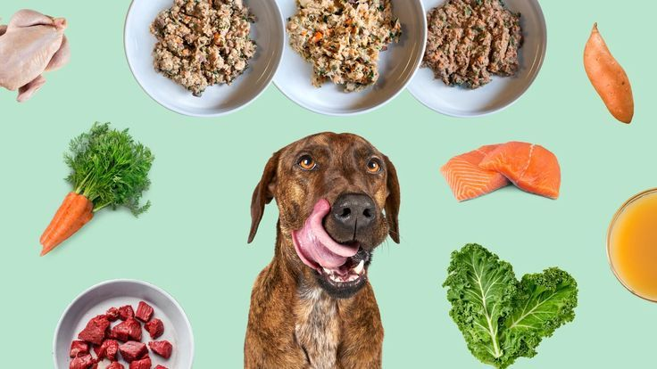

Ingredient
Sourcing
We travel the globe to source the purest, highest-quality ingredients for your pup.
Our Sourcing
Locations
 USA
USA
USA Farm Chicken
Free-range chicken from family farms in the Midwest, raised without antibiotics or hormones.
Learn More NZ
NZ
New Zealand Lamb
Grass-fed lamb from the pristine pastures of the South Island, free to roam year-round.
Learn More SE
SE
Swedish Salmon
Sustainable, cold-water salmon rich in Omega-3 fatty acids, harvested from Nordic waters.
Learn More USA
USA
Organic Sweet Potatoes
Certified organic sweet potatoes grown in nutrient-rich California soil with regenerative methods.
Learn More CA
CA
Canadian Turkey
Free-range turkey from Quebec family farms, raised on vegetarian feed with no added growth hormones.
Learn More AU
AU
Australian Beef
Grass-fed, free-range beef from the vast Outback pastures, known for its rich flavor and tenderness.
Learn More
Our Quality
Promise

No Fillers
Zero corn, wheat, soy, or artificial bulking agents. Every ingredient serves a purpose.

No Preservatives
Natural preservation methods — tocopherols and rosemary extract — instead of chemicals.

No Artificial Colors
Every treat gets its color from real ingredients — no dyes, no tricks, no exceptions.

No GMOs
All ingredients are non-GMO verified, from our fruits and vegetables to our meats and grains.
Commitment to
Sustainability
Every sourcing decision we make considers both nutritional value and environmental impact. We believe you shouldn't have to choose between what's best for your dog and what's best for the planet.
Regenerative Farming
We partner with farms that use crop rotation, cover cropping, and no-till methods to enrich the soil and capture carbon.
Eco-Friendly Packaging
All our bags are made from 100% PCR recycled materials and are fully recyclable through standard curbside programs.
Carbon Neutral Shipping
We offset every shipment through verified carbon credit programs that fund reforestation and renewable energy projects.

Certified sustainable supply chain
Meet Our
Farm Partners

Green Acres Farm
Iowa, USA
"We've been farming this land for three generations. Every chicken raised here is treated with respect and fed only the best."

Southern Pastures
South Island, New Zealand
"Our lambs graze on over 5,000 acres of pristine pasture, with fresh mountain air and crystal-clear water."

Nordic Fjord Fisheries
Nordland, Norway
"The cold, clean waters of the Norwegian fjords produce the richest, most sustainable salmon in the world."
Get 15% Off
Your First Order
Subscribe for sourcing updates, new ingredient stories, and exclusive deals straight to your inbox.